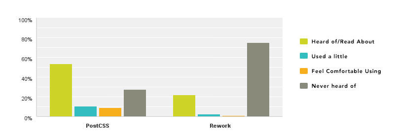
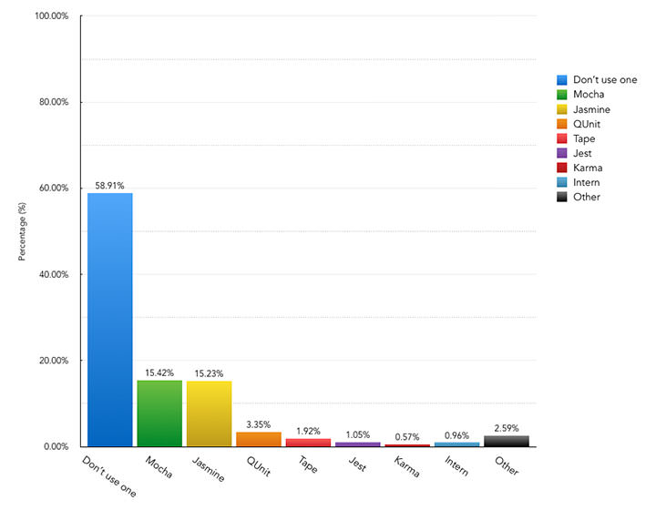

2015: 前端工具现状(原文)
-
问题一：预处理器
| 预处理器 |
得票数 |
百分比 |
| Sass |
689 |
66.00% |
| Less |
140 |
13.41% |
| 不使用预处理 |
141 |
13.51% |
| 其它 |
30 |
2.87% |
-
问题二 ：PostCSS 和 Rework
| |
听/看过 |
偶尔用 |
常用 |
从没听过 |
| PostCSS |
53.64% (560) |
10.34% (108) |
8.91% (93) |
27.11% (283) |
| Rework |
21.84% (228) |
2.30% (24) |
0.86% (9) |
75.00% (783) |

-
问题三：自动化工具
| 自动化工具 |
得票数 |
百分比 |
| Gulp |
488 |
46.74% |
| Grunt |
274 |
26.25% |
| NPM |
40 |
3.83% |
| Broccoli |
13 |
1.25% |
| Other |
50 |
4.79% |
| 不使用任何工具 |
179 |
17.15% |

-
问题四：JS 库和框架
|
听/看过 |
偶尔用 |
常用 |
从没听过 |
| jQuery |
1.7% (18) |
6.8% (71) |
91.5% (955) |
0% (0) |
| Underscore |
33.4% (349) |
19.2% (200) |
38.6% (403) |
8.8% (92) |
| Backbone |
58.1% (606) |
21.6% (226) |
18.6% (194) |
1.7% (18) |
| AngularJS |
36.4% (380) |
34.9% (364) |
28.5% (298) |
0.2% (2) |
| Ember |
76.8% (802) |
15.6% (163) |
4.6% (48) |
3% (31) |
| React |
59.6% (622) |
21.8% (228) |
15.7% (164) |
2.9% (30) |
| Polymer |
70.5% (736) |
12.2% (127) |
3.3% (35) |
14% (146) |
| Knockout |
67.9% (709) |
10.4% (109) |
5.5% (57) |
16.2% (169) |

-
问题五：你在你的主要项目中使用哪款 JS 库/框架
|
得票数 |
百分比 |
| 只用原生不用库 |
52 |
11.13% |
| jQuery |
264 |
56.53% |
| AngularJS |
72 |
15.42% |
| React |
38 |
8.14% |
| Ember |
15 |
3.21% |
| Backbone |
11 |
2.36% |
| Underscore |
7 |
1.50% |
| Polymer |
2 |
0.43% |
| Knockout |
6 |
1.28% |
| 其它（请指出） |
0 |
0.00% |

-
问题六：JS 模块加载器
| 模块加载器 |
得票数 |
百分比 |
| 不使用加载器 |
538 |
51.53% |
| Browserify |
185 |
17.72% |
| RequireJS |
142 |
13.60% |
| webpack |
120 |
11.49% |
| JSPM |
30 |
2.87% |
| 其它 |
29 |
2.78% |

-
问题七：JS 单元测试
| 工具 |
得票数 |
百分比 |
| 不使用测试工具 |
615 |
58.91% |
| Mocha |
161 |
15.42% |
| Jasmine |
159 |
15.23% |
| QUnit |
35 |
3.35% |
| Tape |
20 |
1.92% |
| Jest |
11 |
1.05% |
| Karma |
6 |
0.57% |
| Intern |
10 |
0.96% |
| 其它 |
27 |
2.59% |

-
问题八：其它工具
|
听/看过 |
偶尔用 |
常用 |
从没听过 |
| Bower |
23.75% (248) |
26.44% (276) |
47.89% (500) |
1.92% (20) |
| Yeoman |
37.45% (391) |
30.56% (319) |
22.13% (231) |
9.86% (103) |
| Ender |
30.36% (317) |
1.92% (20) |
0.86% (9) |
66.86% (698) |
| NPM |
6.80% (71) |
17.91% (187) |
71.07% (742) |
4.22% (44) |